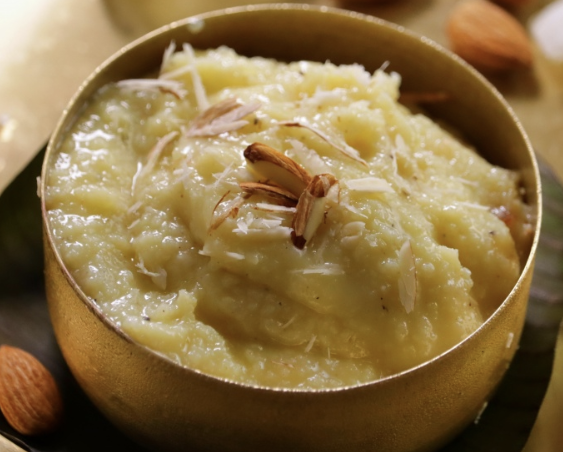

Home
|
Desserts Recipes
Search

Milk PalaKova
Milk Khoya is made across South India. In Andhra, it has a different method for each area. Each style of Milk Khoya has its own speciality.
SNACKS
Rice Kheer
Payasam has variants such as Pongali in Telugu. In Tamil Nadu it is Akkarasi or Sekkarai Pongal. Malyalis call it payasam. Punjabis make Rice Kheer with Milk, Rice and Sugar. Muslims also make Rice Kheer, but their method is different.
PRASADAM
Mixed Fruit Custard
The taste of the Custard is enhanced during summers. The recipe for Fruit Custard is very simple. Most of us are familiar with it, but if you follow some special tips, you will enjoy it even more.
DESSERTS
Gulab Jamun Ice Cream
Make Ice Cream at home that tastes exactly like the one bought in a shop. Just follow my tips, and you will get Ice Cream with that kind of taste and look.
DESSERTS
Seethaphal Rabidi
Seethaphal Rabidi is a traditional Indian sweet dessert made with custard apple, whole fat milk flavored with little cardamom. The texture of this sweet delicacy is extremely rich, creamy, and silky that just slips down the palate very smoothly on eating.
DESSERTS
>>
1
2
<<